267
UNIDADE 8 - CAPÍTULO 2
CAPÍTULO 2 - Quadriláteros
Agora, vamos relembrar o que aprendemos sobre os polígonos de quatro lados e ampliar nossos conhecimentos.
Elementos do quadrilátero
Vejamos o quadrilátero ABCD.
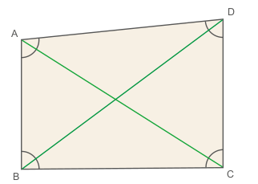1. Troque ideias com seu colega e, no caderno, identifiquem os vértices, os lados, os ângulos internos e as diagonais do quadrilátero ABCD.
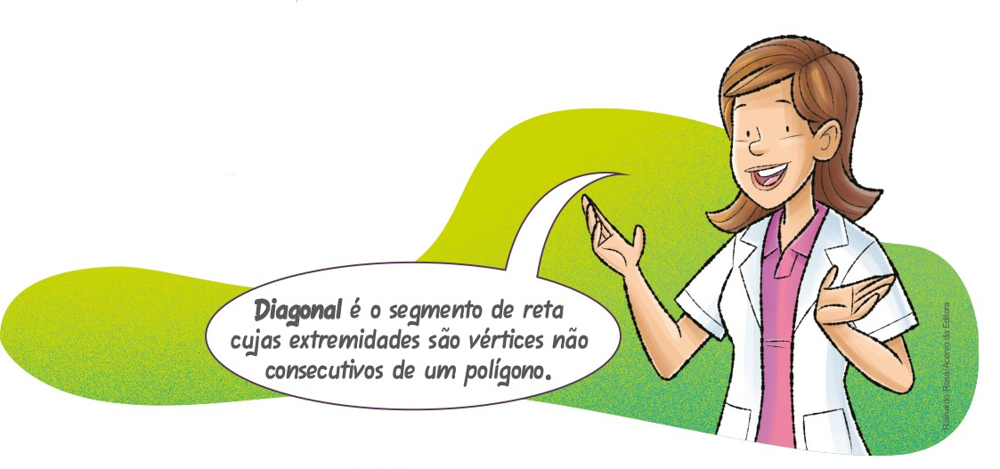Paralelogramos
São quadriláteros que têm dois pares de lados opostos paralelos. No paralelogramo abaixo:
► \(\overline{AB}\) // \(\overline{CD}\) e \(\overline{AD}\) // \(\overline{BC}\)
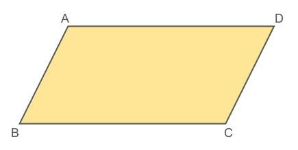268
UNIDADE 8 - CAPÍTULO 2
Retângulo
São paralelogramos que apresentam os quatro ângulos retos.
No exemplo abaixo, temos:
► med(Â) = med(B) = med(C) = med(D) = 90°
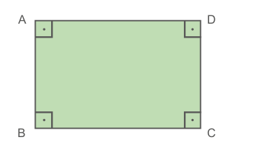Losango
São paralelogramos que apresentam os quatro lados congruentes.
No exemplo abaixo, temos:
► \(\overline{AB}\) ≡ \(\overline{BC}\) ≡ \(\overline{CD}\) ≡ \(\overline{DA}\)
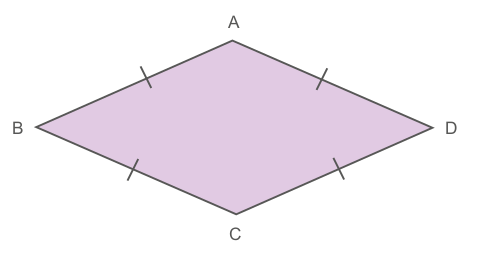Quadrado
São paralelogramos que apresentam os quatro ângulos retos e os quatro lados con- gruentes.
No exemplo abaixo, temos:
► \(\overline{AB}\) ≡ \(\overline{BC}\) ≡ \(\overline{CD}\) ≡ \(\overline{DA}\)
► med(Â) = med(B) = med(C) = med(D) = 90°
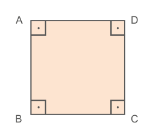Trapézios
São quadriláteros que têm somente um par de lados paralelos.
No trapézio a seguir, temos:
► \(\overline{AD}\) // \(\overline{BC}\)
► \(\overline{AD}\) é a base menor do trapézio.
► \(\overline{BC}\) é a base maior do trapézio.
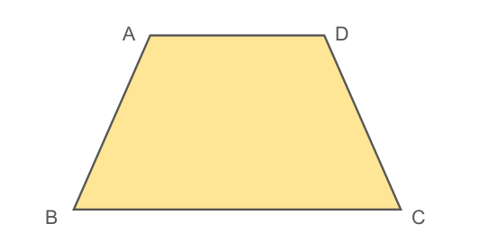Trapézio retângulo
São os trapézios que apresentam dois ângulos internos retos.
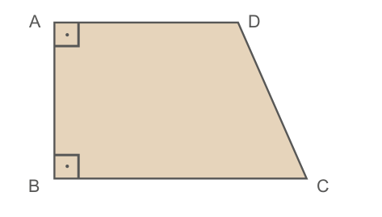Trapézio isósceles
São os trapézios cujos lados não paralelos são congruentes.
No exemplo abaixo, temos:
► \(\overline{AB}\) ≡ \(\overline{CD}\)
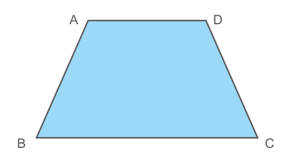269
UNIDADE 8 - CAPÍTULO 2
Trapézio escaleno
Os trapézios que não são retângulos nem isósceles são chamados de escalenos. Os lados não paralelos apresentam medidas diferentes.
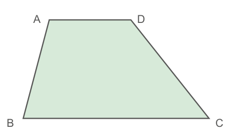Soma das medidas dos ângulos internos de um quadrilátero
Observe os quadriláteros abaixo:
![Cinco quadriláteros. O primeiro é um paralelogramo laranja com uma linha diagonal dividindo ele em duas partes iguais. O segundo um paralelogramo azul, também com uma linha diagonal dividindo ele em duas partes iguais. O terceiro um losango roxo na horizontal, uma linha na vertical divide ele em duas partes iguais. O quarto é um quadrado amarelo com uma linha na vertical dividindo ele em duas partes iguais. O quinto é um retângulo verde também com uma linha na vertical dividindo ele em duas partes iguais.](../../resources/images/unidade8/capitulo2/imagem10.png)
Verifica-se que ao traçarmos uma diagonal em qualquer quadrilátero, estamos dividindo-o em dois triângulos.
Agora, observe o quadrilátero MNOP que foi dividido em dois triângulos:
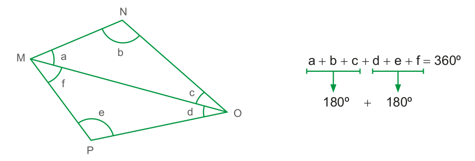Perceba que os vértices dos triângulos formados coincidem com os do quadrilátero.
Como a soma das medidas dos ângulos internos de um triângulo é igual a 180º e sabendo que, em cada quadrilátero, há dois triângulos com vértices coincidentes, verificamos que:
A soma das medidas dos ângulos internos de um quadrilátero é sempre igual a 360º.
270
UNIDADE 8 - CAPÍTULO 2
Como exemplo, vamos determinar o valor de x, indicado no quadrilátero a seguir.
x + 90º + 90º + 85º = 360º
x + 265º = 360º
x = 360º − 265º
x = 95º
Logo, o ângulo x mede 95º.
Construção de um quadrado usando régua e compasso
Vamos construir um quadrado com 3 cm de lado, usando régua e compasso. Siga os passos a seguir.
1. Trace uma reta t, e sobre ela trace o segmento \(\overline{AB}\) com 3 cm de medida. Este segmento será um dos lados do quadrado.
2. Com o auxílio do compasso, ponta-seca em A, trace dois arcos sobre a reta t, encontrando os pontos M e N.
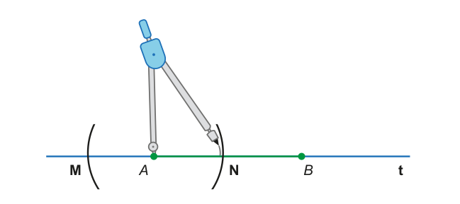3. Com a ponta-seca em M e N, e com uma abertura maior que a anterior, trace dois arcos encontrando o ponto O de intersecção entre eles.
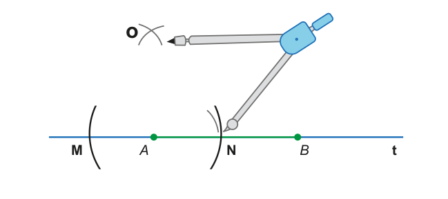271
UNIDADE 8 - CAPÍTULO 2
4. Com o apoio de uma régua, trace a reta u, perpendicular a reta t. Em seguida, sobre a reta u, com abertura do compasso medindo 3 cm, ponta-seca em A, trace um arco sobre a reta u, encontrando o ponto D.
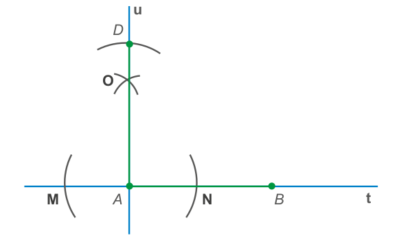5. Com a ponta-seca em D, e com medida da abertura do compasso igual 3 cm, trace um arco que deverá interceptar outro arco que será traçado a partir do ponto B, encontrando o ponto C.
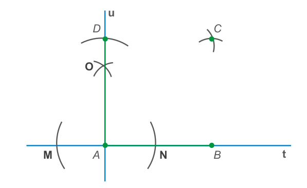6. Trace os segmentos \(\overline{BC}\) e \(\overline{CD}\) finalizando a construção do quadrado. Pinte a região interna.
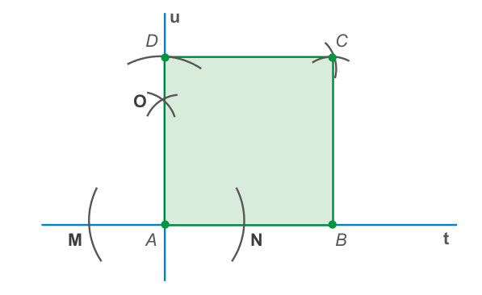272
UNIDADE 8 - CAPÍTULO 2
Agora, vamos representar a construção de um quadrado por meio de um esquema. Observe que podemos indicar o passo a passo de formas diferentes.
![Fluxograma de processo com o passo a passo para a construção do quadrado.
O processo se inicia com a frase “Construção. Vamos aprender, passo a passo, como construir um quadrado?”, segue na vertical com uma seta para a etapa “Começou” dentro em uma figura oval amarela. Uma seta apontada para baixo dá início ao passo a passo com as orientações distribuídas em 8 retângulos um abaixo do outro. À esquerda de cada retângulo, a representação do passo a passo em figuras até a construção do quadrado. Retângulo 1: Trace uma reta t e faça um segmento de reta com 3 centímetros sobre ela. Retângulo 2: Com a ponta seca no ponto A, trace dois arcos sobre a reta t, encontrando M e N. Retângulo 3: Com a ponta seca em M e N, aumente a medida da abertura do compasso e trace dois arcos que se intersectam em O. Retângulo 4: Com a ajuda de uma régua, trace a reta u, a partir do ponto A, perpendicular à reta t, passando por O. Retângulo 5: Com a abertura do compasso em 3 centímetros e sua ponta seca em A, trace um arco sobre a reta u, encontrando o ponto D. Retângulo 6: Com o compasso e sua abertura de 3 centímetros, trace dois arcos que se intersectam, usando a ponta seca nos pontos D e B. Retângulo 7: A intersecção desses arcos forma o ponto C. Retângulo 8: Para finalizar, faça os segmentos BC e CD. Pinte a região interna. Uma última seta aponta para uma figura oval amarela com a palavra: Terminamos!](../../resources/images/unidade8/capitulo2/imagem19.png)
273
UNIDADE 8 - CAPÍTULO 2
ENCONTRE SOLUÇÕES
1. Qual é o perímetro de um quadrado com 13,25 cm de lado?
2. Qual é a medida do lado de um losango com 93,6 m de perímetro?
3. Em um trapézio retângulo, o menor ângulo interno mede 35º. Quanto mede o maior ângulo interno desse trapézio?
4. As medidas dos ângulos internos de um quadrilátero são representadas por x, 2x, 3x e 4x. Qual é a medida, em graus, de cada ângulo?
5. Calcule as medidas dos ângulos internos do quadrilátero ABCD.
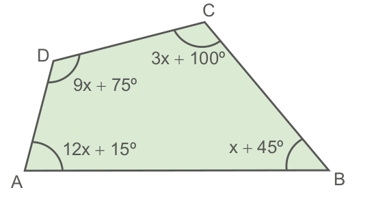6. Observe as figuras geométricas a seguir. É possível montar um mosaico usando:
a) somente triângulos equiláteros?
b) triângulos equiláteros e quadrados?
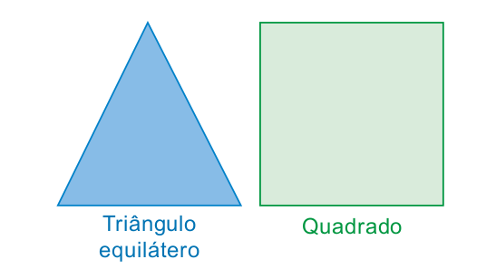Desenhe, em seu caderno, um mosaico para verificar se é possível em cada um dos casos solicitados esta construção.

7. (OBMEP) A figura é formada por três quadrados, um deles com área de 25 cm2 e o outro com 9 cm2. Qual é o perímetro da figura?
a) 20 cm
b) 22 cm
c) 24 cm
d) 26 cm
e) 38 cm
274
UNIDADE 8 - CAPÍTULO 2
PROBABILIDADE E ESTATÍSTICA
► Combate ao tráfico de animais silvestres
Estimativas indicam que o tráfico de espécies silvestres (excluída a pesca e a madeira ilegais) pode movimentar até 23 bilhões de dólares por ano (Nellemann et al., 2016), tornando essa prática ilícita, que é dominada por grupos criminosos organizados, altamente lucrativa (Comisión Europea, 2016) e influente sobre o declínio da biodiversidade.
China, Estados Unidos e União Europeia formam os principais mercados consumidores de animais silvestres, enquanto as regiões mais biodiversas do planeta são as maiores fontes de animais e seus produtos (Wyatt, 2013). O Brasil, infelizmente, é um exportador de peso, além de ter ampliado o seu mercado interno (tanto para fauna silvestre nativa quanto exótica) nos últimos anos.
Fiscalização
A atividade fiscalizatória constitui parte essencial da gestão de
recursos naturais, tanto no controle de irregularidades por parte de
pessoas físicas e jurídicas legalmente habilitadas, quanto para coibir a
ação clandestina, principalmente caça e pesca ilegais e, em especial, o
tráfico de fauna.
[...]
Nas apreensões realizadas pelo Ibama, há uma marcante diferença entre pesca e caça. Enquanto a maior parte dos animais estava morto, nas infrações relativas a recursos pesqueiros, quase todos os objetos de caça foram apreendidos vivos (Figura 18). Isso parece ressaltar a intenção de consumo, quando se trata de pesca, mas de tráfico, mesmo que doméstico, quando o objeto é fruto da caça ilegal.
275
UNIDADE 8 - CAPÍTULO 2
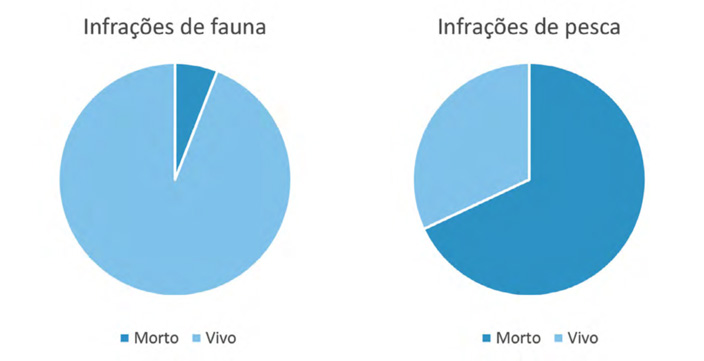Em se tratando de caça ilegal, aves e mamíferos somam 79% das apreensões de animais mortos, porém aves representam a quase totalidade (95%) dos animais vivos (Figura 19).
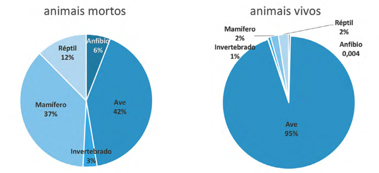A partir das informações apresentadas, converse com seus colegas e professor para responder as seguintes questões:

1. Quais ações podem ser deflagradas para combater o tráfico de animais silvestres?
2. Como são chamados os gráficos usados para relatar as informações referentes as infrações e percentual de animais vivos e mortos?
3. É comum o uso deste tipo de gráfico pela mídia? Em quais situações?
276
UNIDADE 8 - CAPÍTULO 2
RELEMBRE
1. Um helicóptero do exército, para distribuir mantimentos às cidades A e B, sai de sua base e faz um trajeto que tem a forma de um triângulo. As medidas dos ângulos internos desse triângulo estão indicadas na figura abaixo.
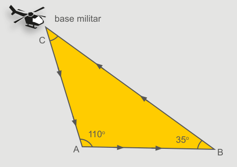Com base nessas informações, determine a medida do ângulo C.
2. A medida dos ângulos x, na figura, é:
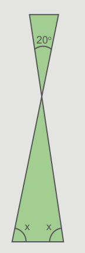a) 20º
b) 50º
c) 60º
d) 80º
3. Um triângulo pode ter:
a) dois ângulos obtusos;
b) dois ângulos retos;
c) um ângulo obtuso, um ângulo reto e um ângulo agudo;
d) Todas as afirmações acima estão incorretas.
4. Determine as medidas dos ângulos internos dos vértices A, B e C do triângulo a seguir.
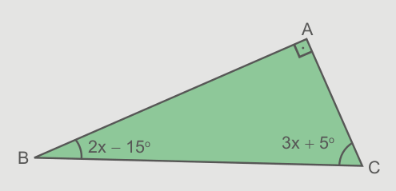5. Dos quadriláteros abaixo, qual não é classificado como paralelogramo?
a)
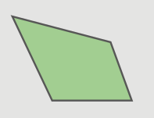b)
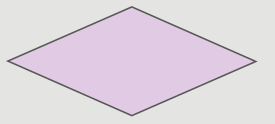c)
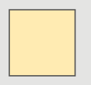d)
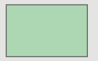e)
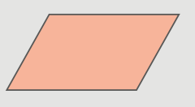277
UNIDADE 8 - CAPÍTULO 2
6. Leia as afirmações a seguir.
I. O quadrado é o único quadrilátero que tem os quatro lados congruentes.
II. O trapézio retângulo tem dois ângulos retos.
III. O quadrado é um caso particular de retângulo.
Podemos afirmar que:
a) I é verdadeira;
b) II e III são verdadeiras;
c) II é falsa;
d) todas as afirmações são verdadeiras.
7. Determine o valor de a.
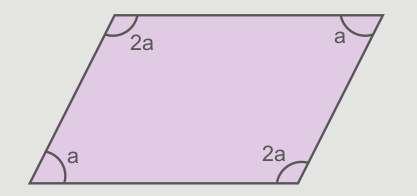8. As medidas dos ângulos representados por x, y e z, respectivamente, são:
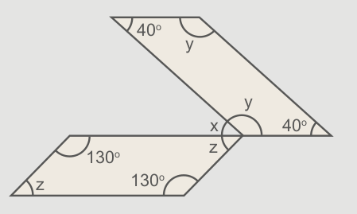9. (Ilhéus, Itabuna-BA) Em um triângulo isósceles, o perímetro mede 80 cm. Sabendo-se que a base vale 20 cm, cada lado deve valer:
a) 20 cm
b) 30 cm
c) 40 cm
d) 60 cm
10. (CESESP-PE) Com três segmentos de comprimentos iguais a 10 cm, 12 cm e 23 cm:
a) é possível formar apenas um triângulo retângulo.
b) é possível formar apenas um triângulo obtusângulo.
c) é possível formar apenas um triângulo acutângulo.
d) não é possível formar um triângulo.
11. (UFMA) Dois lados de um triângulo isósceles medem, respectivamente, 5 cm e 2 cm. Qual o seu perímetro?
a) 7 cm
b) 9 cm
c) 12 cm
d) 14 cm
12. (PUC-SP) Na figura abaixo a = 100º e b = 110º. Quanto mede o ângulo x ?

a) 30º
b) 50º
c) 80º
d) 100º